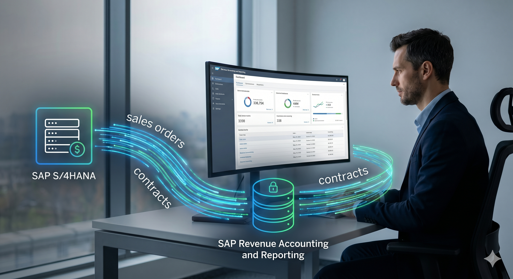
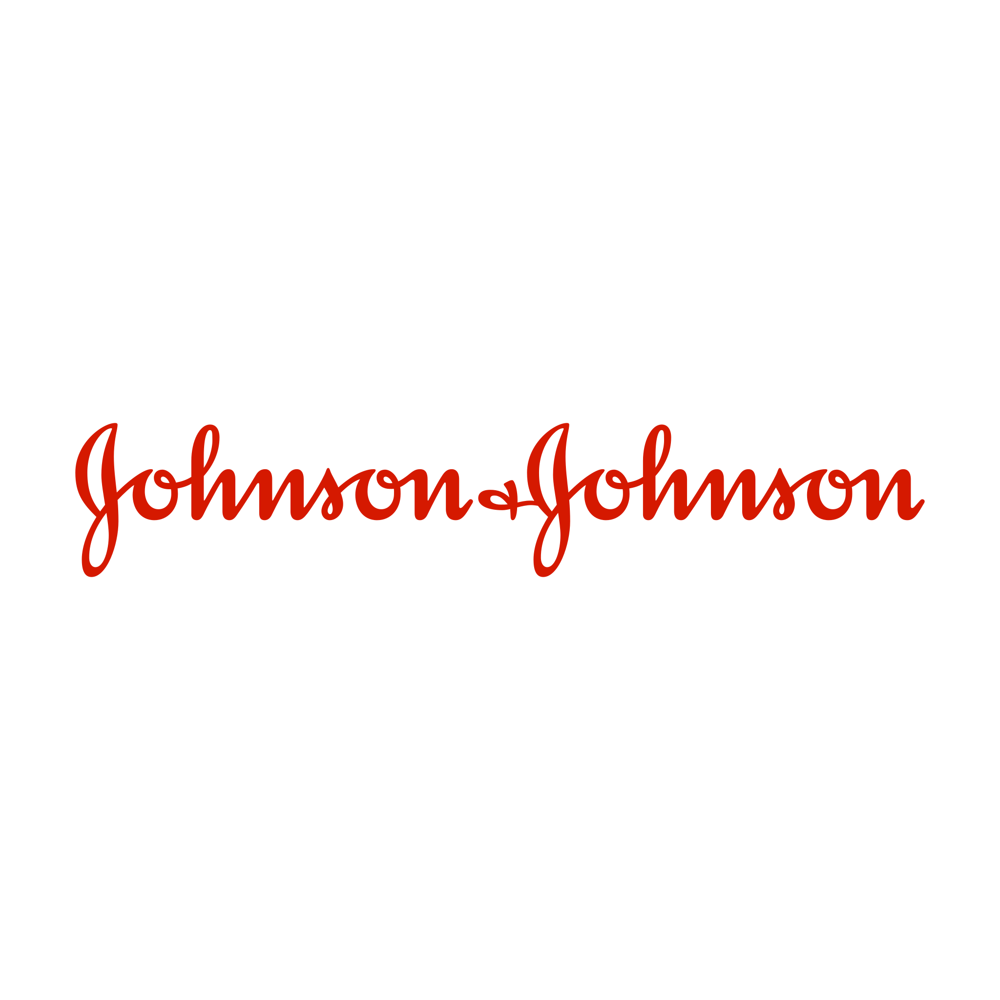

Loading Systems...
Loading Systems...
MyTekX delivers end-to-end SAP implementations — spanning Revenue Accounting & Reporting (RAR), Business Technology Platform (BTP), and S/4 Sales & Service — engineered for resilience, precision, and growth.


SAC, BW/4HANA, embedded analytics, and custom dashboards for data-driven enterprise decisions across your SAP landscape.
Explore service →End-to-end implementations, greenfield & brownfield migrations — from business blueprinting to go-live and full hypercare support. 80+ projects. 100% on-time.
Explore service →Certified Worksoft partner — no-code SAP testing, 5–10x faster ECC→S/4HANA script conversion, and bi-weekly regression automation.
Explore service →Scalable REST & GraphQL APIs, microservice architectures, and cloud-native backends using Node.js, Java, Python.
Explore service →Platform connecting doctors, patients, and pharmacies with AI-driven decision support and patient health record management.
Explore service →SAC, BW/4HANA, embedded analytics, and custom dashboards for data-driven enterprise decisions across your SAP landscape.
Explore service →Our BTP Center of Excellence delivers end-to-end cloud solutions — RAP, CAP, Integration Suite, and proven proof-of-concepts.
Explore service →

With 35+ years of IT consulting excellence, MyTekX specializes in SAP and Healthcare IT, delivering tailored solutions across Automotive, Pharma, Manufacturing, and 9 other industries.
Deep SAP expertise across 15+ modules. Trusted partner for system integrators worldwide.
Certified Worksoft partner for SAP test automation and process management.
Onshore-offshore model delivering cost-effective, high-quality SAP consulting services.
AI-driven platform connecting doctors, patients, and pharmacies with SAP integration.

MyTekX delivers SAP RAR implementations for ASC 606 and IFRS 15 compliance — event-driven revenue recognition, performance obligation frameworks, and OCM transformation. We built Custom RAR solutions before SAP had a standard product.
80+ migrations. 100% on-time record. Our proven methodology ensures your business never stops running — from greenfield to brownfield to selective migration.
Certified Worksoft partner delivering 5–10x faster ECC to S/4HANA script conversion and bi-weekly automated regression testing across 3-tier landscapes.
Our BTP CoE delivers RAP, CAP, Integration Suite, and proven POCs — from Shipment Allocation to Vendor Invoice Management with AI-driven automation.
The platforms and tools that power enterprise-grade solutions.

SAP CLM + RARCustom Contract & Lease Management with Revenue Recognition (RAR) for IFRS 15 — influencing SAP's own RAR offering.
 Worksoft Automation
Worksoft Automation10,000+ test scripts converted to S/4HANA Fiori at 5–10x faster speed than any alternative approach.
 Long-Term Partner
Long-Term PartnerProviding 100+ consultants to ATOS across major enterprise projects, demonstrating reliability and deep SAP expertise.
"MyTekX transformed our entire diagnostic integration with a custom CLM and RAR solution when SAP itself couldn't provide one. Their innovation influenced SAP's own Revenue Recognition product. Exceptional technical depth."
"17 years as our trusted SAP vendor. MyTekX consistently delivers quality consultants for our most complex enterprise projects worldwide."
"Outstanding SuccessFactors rollout — on time, within budget, minimal disruption to our global HR operations. True professionals."
"Deep SAP expertise and a collaborative team. Their custom RAR and commission solution solved a business challenge that even SAP standard couldn't address."
Let's discuss your SAP roadmap, BTP initiative, or backend architecture challenge.